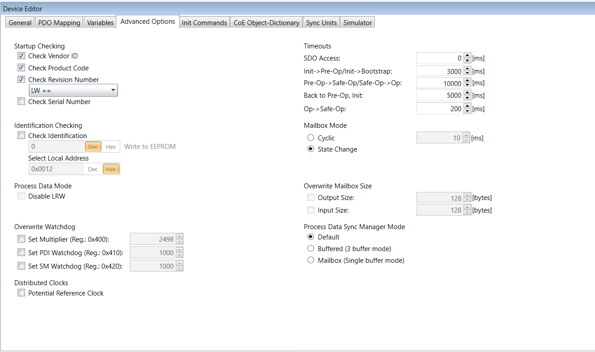

The Advanced Options tab is available in the Device Editor pad when selecting in the Project Editor a Sub-device and with the Expert Settings enabled.
In this tab, you can change the advanced options of the Sub-device.

Startup Checking
Check Vendor ID; Main-device checks the Vendor ID if the state machine changes from INIT to PREOP of the Sub-device.
Check Product Code; Main-device checks the Product Code if the state machine changes from INIT to PREOP of the Sub-device.
Check Revision Number; Main-device checks the Revision number if the state machine changes from INIT to PREOP of the Sub-device. The Revision can be verified by different ways:
==; HI word is equal, LO word is equal
>=; HI word is equal or greater, LO word is equal or greater
LW ==; HI word is equal
LW ==, HW >=; LO word is equal, HI word is equal or greater
HW ==; LO word is equal
HW==, LW >=; HI word is equal, LO word is equal or greater
Check Serial Number; Main-device checks the Serial Number if the state machine changes from INIT to PREOP of the Sub-device.
Identification Checking
Check Identification; If selected, the Identification Value of the Sub-device is checked.
Process Data Mode
Disable LRW; Determines whether LRD/LWR command or the LRW command is used for accessing process data. Cable redundancy needs LRD/LWR, Sub-device to Sub-device copy needs LRW.
Overwrite Watchdog
Set Multiplier; Writes the configured value to the corresponding Sub-device register: Reg.: 0x400.
Set PDI Watchdog; Writes the configured value to the corresponding Sub-device register: Reg.: 0x410.
Set SM Watchdog; Writes the configured value to the corresponding Sub-device register: Reg.: 0x420.
Distributed Clocks
Potential Reference Clock; Set to use Sub-device as a potential reference clock. This might be useful if:
A hot connect Sub-device, which is used as reference clock, was disconnected from the network.
The EtherCAT Main-device searches for the first potential reference clock.
No potential reference clock Sub-device is found, the first DC Sub-device is then used.
Timeouts
SDO Access; Internal Main-device timeout used for accessing the SDO.
Init -> Pre-Op/Init -> Bootstrap; Internal Main-device timeout used for changing Sub-device state.
Pre-Op -> Safe-Op/Safe-Op -> Op; Internal Main-device timeout used for changing Sub-device state.
Back to Pre-Op, Init; Internal Main-device timeout used for changing Sub-device state.
Op -> Safe-Op; Internal Main-device timeout used for changing Sub-device state.
Mailbox Mode
Cyclic; Interval in milliseconds within the input mailbox is read (polling mode).
State Change; The input mailbox is read only if the status bit is set.
Overwrite Mailbox Size
Output Size; Overwrites mailbox output size.
Input Size; Overwrites mailbox input size.
Process Data Sync Manager Mode
Default; Uses sync manager mode from ESI file.
Buffered (3 buffer mode); Enables 3 buffer mode.
Mailbox (Single buffer mode); Enables single buffer mode.